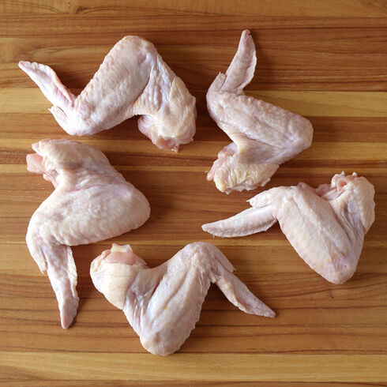
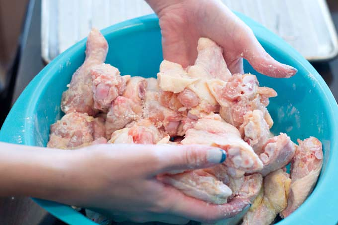
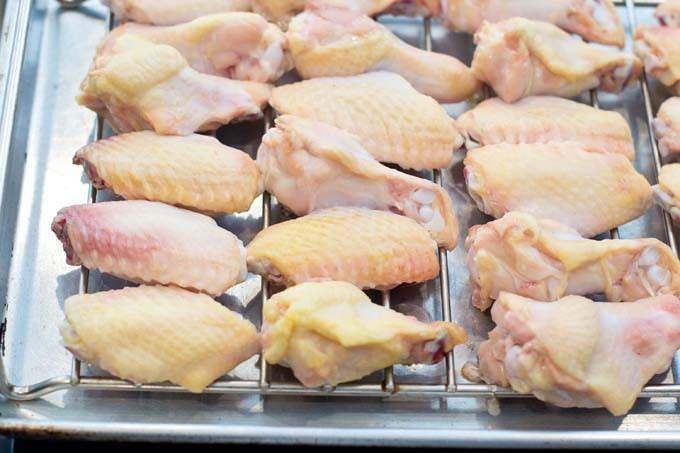
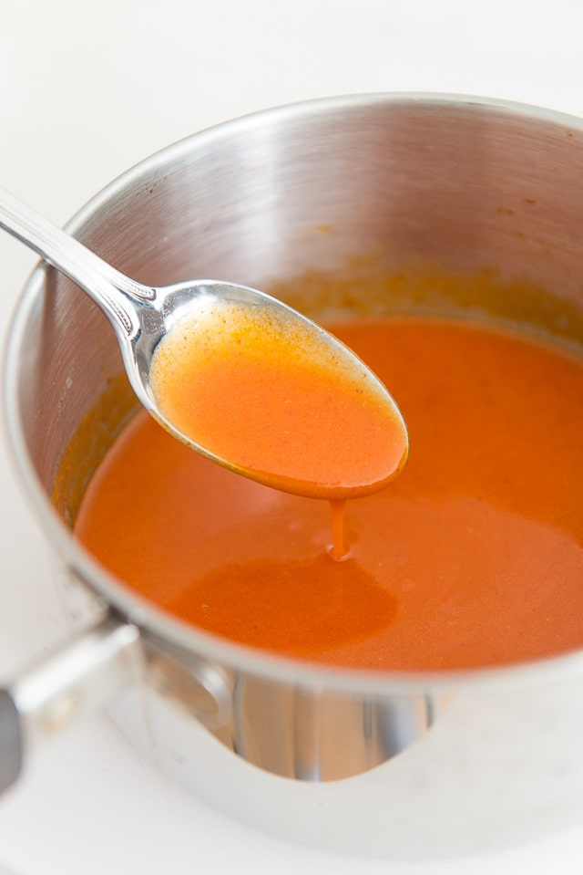

About
Chicken wings are just great. If you go to a resturaunt they are proably fried. Which is how they get them so darn crispy. If you are like me, you don't have a deep frier at home, and don't want to. This is a great recipie to get wings super crispy at home in the oven. It takes some time, but worth it!
Ingredients
Wings:
1 of those big packs of chicken wings
1 tbsp Salt
Sauce:
1 stick of butter (8 tbsp)
½ cup franks red hot
¼ cup sambal
1 tbls worcester sauce
1 teaspoon paprika
1 teaspoon cayenne
-

-
Step-2
Using a cleaver or chef knife, separate wings into drums and flats if not already done so for you. Using your knife find your way into the joint and separate into parts. Also remove wing tips as they can burn. They are never good if left on, so just do yourself a favor by roving those worthless little chicken bits. But if you're one of those people that saves bones in the freezer to make stock later, then add it to your collection.
-

-
Step-3
In a large bowl sprinkle wings with salt and baking powder. This is not to season or coat them, so if it seems like a not enough that is because it isn’t. This is only to help the wings get crispy in the oven. The wings will be seasoned by the sauce you are going to make. The baking powder helps lower the temperature at which the miard reaction happens. If you want to learn more about thoat, just google it.
-

-
